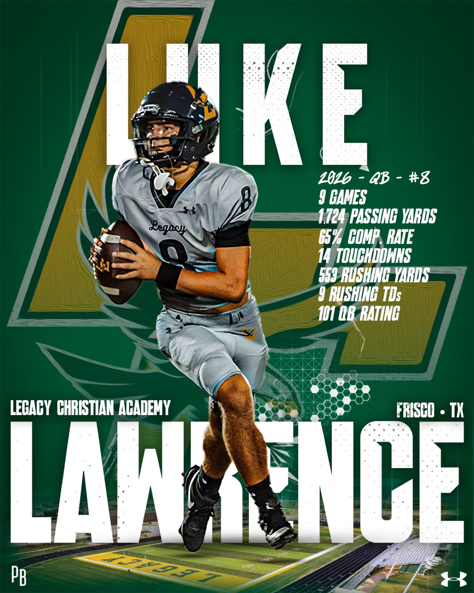

FILE.01Quarterback Development
Scroll down to discover
Developing QBs who win Friday nights and reach the next level.
The System
XOS is a quarterback development system built by players who've been in the room — from first snap to draft day.
100+NFL & College QBs Coached
The XOS Advantage
01 / On-Field
On-Field 1:1
Private development. Mechanics, footwork, processing — built for your athlete.
02 / On-Field
On-Field Group
Competition and reps against real talent. Iron sharpens iron.
03 / Remote
Virtual Coaching
Film breakdown and remote programming from anywhere in the country.

Built by players who've been there
Rafe PeaveyFormer Arkansas QB
Kolt PeaveyQB Coach